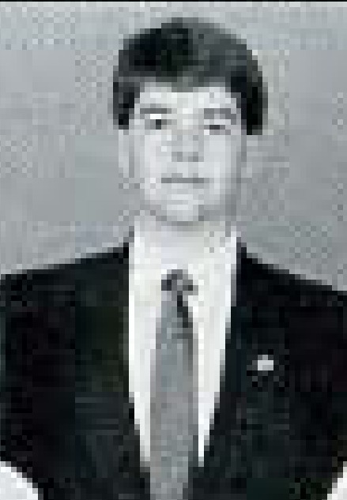
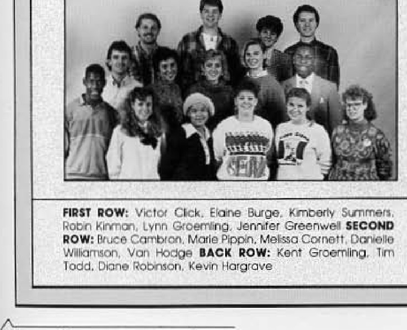

#
Not enough candidates to fill the ballot
ASG races faced a candidate shortage; one report notes a candidate entered a race to help a rival rather than to win. The same issue has ASG tabling a phone bill after amendment.
Associated Students · academic year

Two-year plate. A 1987 Herald piece reports a candidate shortage and mentions a Tim Todd race. Confirmed from inside the term: the Herald of 31 March 1988, reporting the ASG presidential primary, refers to Todd as the sitting president.
Todd sought a second term in spring 1987 in a rematch against Greg Elder, the man he had beaten the year before. The Herald reported the two would battle again in its 19 March issue.
On election day the Herald endorsed Elder as the better choice and indexed the race itself under the headline no contest. The vote was then re-run, and Todd won it: the paper carried the result on 16 April 1987. The SGA plaque lists him on a single 1986-88 plate, and no other president appears in the 1987-88 record.
The 1987-88 year under the two-year plate ended with the election of Scott Whitehouse on 7 April 1988, closing out the era of the Todd presidency.
Todd stood for a second term in the election held in March 1987. The Herald reported that Bill Fogle had entered the presidential race to help Todd rather than to win it, and the same issue recorded a shortage of candidates across the races and an appeal by a disqualified candidate.
His second year drew harder coverage. The Herald of 29 October 1987 reported that Associated Student Government was considering required course evaluations, and carried a separate article saying apathy was killing both ASG and the Residence Hall Association.
Sources for this account
Everything the archive holds on Timothy Todd, gathered on one page.
Everyone the record shows in office this year. Each name goes to their own page, with every office they held and everything the archive says they did.
Issued the monthly voucher summaries, and on 15 March 1988 reported to Congress that a bill for 1,000 copies had arrived unexplained from Kinko's.
ASG minutes, 22 September 1987 and 15 March 1988Signed the minutes through the year, including those recording the opening of impeachment proceedings against the Administrative Vice-President. She kept the same short list of vacancies week after week: senior class vice-president, two off-campus representatives, and the Business and Potter college alternates.
ASG minutes, 17 November 1987 and 1 March 1988 Herald 62:53, 14 Apr 1987 PDFReported to Congress on the Bowling Green City Traffic Commission and on a rise of more than 20 per cent in campus crime, and handed down to Congress an official record from the Judicial Council to be implemented at the next election. Impeachment proceedings against him were opened on 17 November 1987; on 1 March 1988 he told Congress he had been cleared by the University, that he would run for the ASG presidency, and that he would take a leave of office until after the elections.
ASG minutes, 22 September and 17 November 1987, 1 March 1988 Herald 62:29, 11 Dec 1986 Herald 61:48, 20 Mar 1986 Herald 61:51, 1 Apr 1986 Herald 61:58, 24 Apr 1986 Herald 62:53, 14 Apr 1987 PDF Herald 62:55, 21 Apr 1987 Herald 63:46, 17 Mar 1988, "Associated Student Government Officer Arrested" Herald 63:50, 31 Mar 1988 PDF Herald 63:16, 27 Oct 1987, "Bill Schilling Out After Residence Hall Association Denies Leave" Herald 63:23, 19 Nov 1987, on the opening of the impeachment process Herald 63:26, 3 Dec 1987, "Student Government Association Drops Request for Impeachment" Herald 63:28, 10 Dec 1987, on the watchdog committee and the reader lettersRan Weekend in the Woods in September 1987, introduced table tents and newsletters as publicity, and handed out the committee certificates in March 1988. She had been vice-chair of Faculty Relations the year before.
ASG minutes, 22 September 1987 and 15 March 1988 Herald 61:56, 17 Apr 1986 Herald 61:57, 22 Apr 1986 Herald 62:53, 14 Apr 1987 PDFAccepted by Congress as chairman of Rules and Elections on 6 October 1987, while the committee was still running that autumn's freshman elections. The minutes of 22 September 1987 record the name as Becky Haaek and those of 6 October as Rebecca Hack; the spelling is unresolved.
ASG minutes, 6 October 1987The 6 things student government staged or ran for the campus this year, drawn from the chronology below. Every one of them also appears on the programmes page, which runs the whole sixty years together.
ASG races faced a candidate shortage; one report notes a candidate entered a race to help a rival rather than to win. The same issue has ASG tabling a phone bill after amendment.
Ed Kenney, disqualified as a candidate in the spring 1987 Associated Student Government election, appealed the ruling. The Herald reported the appeal on 26 March 1987 alongside the rest of its election coverage.
ASG considered dropping its membership in the intercollegiate legislature, while the Herald warned that sharing an officer with Interhall Council could mean trouble for both groups. An editorial the following week argued the Kentucky Intercollegiate State Legislature was worth keeping as a way to promote ideas.
The Herald reported that the Associated Student Government filing deadline had been extended. It was the first of the year's several notices about seats that had not attracted candidates.
Herald 63:6, 15 Sep 1987, "Associated Student Government Filing Deadline Extended"
The congress passed a resolution calling for a crosswalk. Campus safety items, including new screens for dormitory windows, filled much of the fall agenda.
The Herald reported that Associated Student Government member Nick Hicks had lost his seat. Five days later the body moved to get tough on absenteeism.
Herald 63:17, 22 Oct 1987, "Associated Student Government Member Loses Seat – Nick Hicks"
ASG moved to get tough on absenteeism after a member lost his seat the week before. The Herald was simultaneously reporting that apathy was killing both ASG and the Residence Hall Association.
The Herald of 27 October 1987 reported that Bill Schilling was out after the Residence Hall Association denied him a leave of absence. The Herald had named Schilling the year before as the member who wrote most of the congress's bills. The same issue carried ASG's move to get tough on absenteeism. The report does not say which seat he lost, and the congress began an impeachment process against him three weeks later.
Associated Student Government took up a proposal to make course evaluations a requirement. The Herald reported the discussion in its issue of 29 October 1987.
The Herald ran an article arguing that apathy was killing both Associated Student Government and the Residence Hall Association. It appeared on 29 October 1987, part way through Todd's second term.
Constitutional amendments went before the body in November, in the same season the congress was pushing for required teacher evaluations. It was the third straight year of structural revision attempts.
Eighty-one students voted to approve the constitutional amendments that had gone before the body two days earlier. The same issue reported that the congress had voted to withdraw its support from the Kentucky Intercollegiate Student Legislature, a membership it had been debating since September.
Herald 63:23, 12 Nov 1987, "81 Students Vote to Approve Student Government Association Amendments"
ASG ran the Book Exchanger for a third semester, a free listing publication in which students advertised used textbooks to each other as an alternative to selling back to the bookstore. Cards went into student mailboxes on 11 November with a 20 November deadline, and about 60 students listed books each semester. Student Affairs chairman Victor Click said the project raised about $60 the previous fall and nothing in the spring against printing costs of about $653, that the year's budget allotted $750 to it, and that he would recommend dropping it if this run failed.
$750 budgeted; about $653 spent on printing the previous year; about $60 raised
Jill Duff reported in the Herald of 19 November 1987 that student government had begun an impeachment process against Bill Schilling. The proceeding did not go the distance: two issues later the Herald reported that the request for impeachment had been dropped.
The Herald of 3 December 1987 reported that student government had dropped its request for impeachment. The following week's issue reported that Schilling was instead placed under the eye of a watchdog committee, carried a piece in which William Fogle explained the congress's actions, and ran three letters on it, including one defending the rescission and one from Van C. Hodge Jr. saying the issue was not closed.
The Herald of 10 December 1987 reported that Bill Schilling was under the eye of a watchdog committee, and printed William Fogle's explanation of student government's actions beside letters from Hollie Hale defending the rescission, Kevin Hargrave calling an editorial an attack, and Van C. Hodge Jr. writing that the student government issue remained.
Dorren Klausnitzer reported that senior class president Greg Robertson had quit. It was the first of the vacancies the body would spend the spring explaining.
Dorren Klausnitzer's article in the Herald of 28 January 1988 attributed student government's conflicts to diversity. The same issue ran an editorial calling that a poor excuse. It appeared seven weeks after the Schilling watchdog committee and five weeks before the Herald reported that ASG's chief officers rarely kept their office hours.
At the 9 February meeting student government created an award to present at its yearly banquet in May, named for Angie Norcia, an Owensboro senior who had died the previous summer of adult respiratory distress syndrome and Guillain-Barre syndrome and who had been active in student government for more than two years. President Tim Todd said it would be one of the highest honours given to a congress member, with recipients nominated and interviewed by a committee of members. It survived as the Mary Angela Norcia Memorial Award, still on the banquet nomination list in 1994.
ASG suspended its rules on 9 February to adopt the standard resolution urging Governor Wallace Wilkinson and the legislature to fund higher education, and presented it at the Frankfort rally on 16 February; Western's was the last of the eight state student governments to pass it. About 3,000 students, faculty and alumni marched up Capitol Avenue in what the Kentucky Advocates for Higher Education called the largest Frankfort demonstration since 1964. Western sent four free buses and 130 of the 161 people who signed up made the trip, joining a Western contingent of about 250, with cheerleaders handing out 250 red towels. A Herald editorial the same week said ASG had choked by passing only a form resolution while Murray State's government ran a write-a-thon that got more than 500 students to write the governor.
The organization publicly cited its reasons for the vacancies in its ranks, and four congress positions had been filled at a single meeting earlier that month. Days later an editorial told the body it needed better ideas, not gimmicks.
Dorren Klausnitzer reported that Bill Schilling had asked the body for a leave of absence, twelve weeks after it dropped the impeachment request against him. The same issue carried an editorial telling the organisation it needed better ideas rather than gimmicks.
Herald 63:43, 25 Feb 1988, "Bill Schilling Asks for Leave of Absence"
The minutes of 1 March 1988 record Bill Schilling running for the presidency of student government, four months after the Herald reported him out following the Residence Hall Association's refusal of a leave of absence, and three months after the congress dropped its impeachment request. He was not among the two candidates the Herald reported surviving the primaries on 31 March.
The minutes of 1 March 1988 record a tuition rally, and the file preserves with them a flyer on the state budget and a proposed budget freeze for Western. It followed the Frankfort higher education rally that ASG had backed a fortnight earlier.
Dorren Klausnitzer reported in the Herald of 3 March 1988 that Associated Student Government's chief officers rarely kept their office hours, and the same issue editorialised that published hours mean little if they are not kept. It ran nine days after the organisation had publicly explained its empty seats, and in the same season as the editorial telling it to find better ideas than gimmicks.
A description of awards filed with the minutes of 15 March 1988 lists the six honours the congress presented: the Dero Downing Award, Outstanding Congress Member, Outstanding Committee Member, the Dean Charles A. Keown Award, the Kerrie Faye Stewart Memorial Award and the Mary Angela Norcia Award. The Norcia award had been created only the month before, in memory of a member who had died the previous summer.
ASG meeting minutes and description of awards, 15 March 1988
The Herald reported the arrest of an Associated Student Government officer, printing the name as William Byron Shilling; earlier items in the same volume print the surname Schilling. The surviving index preserves only the headline: no charge is recorded, and no source found reports any outcome. The minutes of 1 March 1988 record that Schilling was running for the ASG presidency.
Herald 63:46, 17 Mar 1988, "Associated Student Government Officer Arrested"
The Herald reported that only 2 of the 32 Associated Student Government positions on the spring ballot were contested. It is the only explicit seat count for Congress found in this period.
Herald 63:47, 22 Mar 1988, "2 of 32 Associated Student Government Positions Contested"
The body tabled a proposal directed against university president Kern Alexander. The same issue reported that the election was officially under way and that the congress would consider adding condom machines.
Herald 63:48, 24 Mar 1988, "Associated Student Government Tables Proposal Against Kern Alexander"
Shannon Ragland and Scott Whitehouse won the ASG presidential primaries, narrowing a field of seven. The same issue reported passage of a proposal requesting a memorial area on campus.
Scott Whitehouse won the ASG presidential election, in an issue that also reported the congress approving condom machines for campus. The election coverage ran alongside editorials saying oversight and closed minds had marred the process.
Resolution 88-9-S, dated 12 April 1988, proposed a ticket sales outlet on campus and set out in detail what it called a Centritic Sales Office. It was one of the last pieces of business of Tim Todd's second term.
Bruce Cambron called for a new election a week after the results, following coverage of votes cast for a write-in candidate that ASG was told it could not ignore. The dispute carried into the following fall.
Resolution 88-10-S, dated 19 April 1988, asked that Unicorn Pizza be open at weekends. The same request came back through successive congresses: Resolution 89-2-F in October 1989 asked for the weekend hours to be expanded, and the administration granted them on a trial basis.
Resolution 88-10-S, Unicorn Pizza and Theater Open on Weekends, 19 April 1988
Dorren Klausnitzer reported in the Herald of 26 April 1988 that Bruce Cambron, who a fortnight earlier had called for a new presidential election over the write-in votes, had made some false claims. Cambron took the complaint on regardless, raising it with university president Thomas Meredith the following October.

Files mirrored on this site from the university archive. Each one links back to the original record.
The first fall meeting of the year: roll call, officer and committee reports, the swearing-in of Kenny Perry as Ogden College Representative, and passage of a resolution on the tuition increase.
From the document · pages 1-3
Kenny Perry was sworn in as the Ogden College Representative.Bills and resolutions from this session, held as files on this site.
Every source cited above, once, with the number of entries that rest on it.
Preferred citation
“1987-88,” SGA 60: Student Government at Western Kentucky University, 1966–2026, revised 3 September 2026, y/1987-88.html
Where a name on this page differs from the plaque in the SGA Chambers, the difference is explained above and recorded on the corrections page.